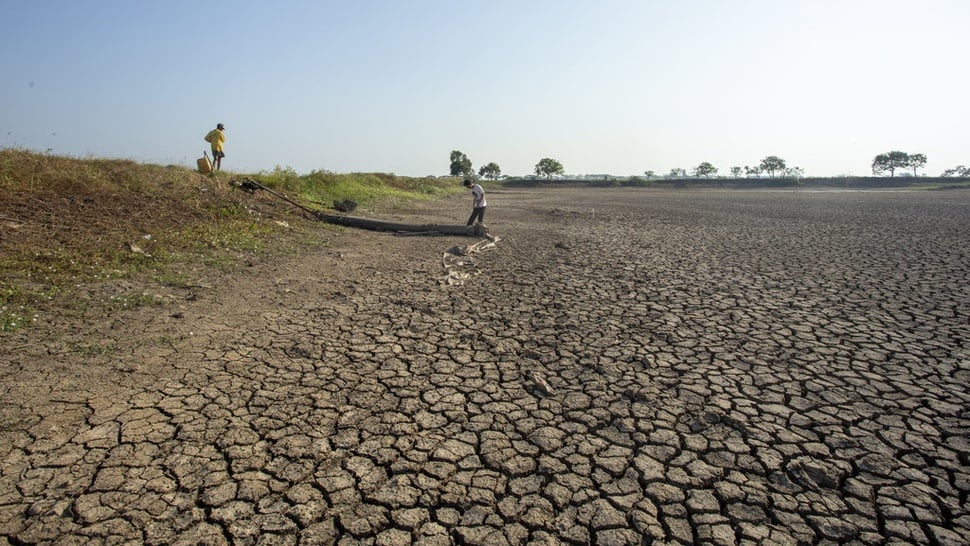

Kekeringan di Tangerang Selatan, BPBD Distribusikan hingga 8.000 Liter Air Bersih Per Hari

TANGERANG SELATAN, KOMPAS.com - Badan Penanggulangan Bencana Daerah (BPBD) Kota Tangerang Selatan (Tangsel) mendistribusikan pasokan air bersih hingga 8.000 liter per hari ke titik wilayah yang mengalami kekeringan.